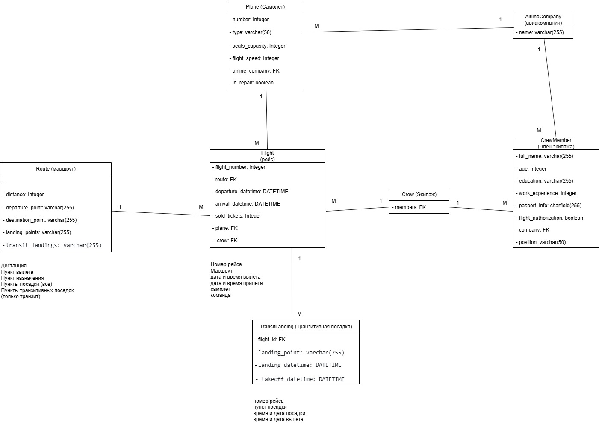

Отчет по лабораторной работе №3
Цель:
Овладеть практическими навыками и умениями реализации web-сервисов средствами Django.
Практическое задание:
Реализовать сайт, используя фреймворк Django 3, Django REST Framework, Djoser и СУБД PostgreSQL, в соответствии с вариантом задания лабораторной работы.
Реализация лабораторной работы (Вариант 14)
Модель базы данных:

Реализация моделей:
from django.db import models
class AirlineCompany(models.Model):
name = models.CharField(max_length=255, verbose_name='Название компании')
def __str__(self):
return self.name
class Plane(models.Model):
number = models.CharField(max_length=20, verbose_name='Номер самолета')
type = models.CharField(max_length=50, verbose_name='Тип самолета')
seats_capacity = models.IntegerField(verbose_name='Число мест')
flight_speed = models.IntegerField(verbose_name='Скорость полета')
airline_company = models.ForeignKey(AirlineCompany, on_delete=models.CASCADE, verbose_name='Компания-авиаперевозчик')
in_repair = models.BooleanField(default=False, verbose_name='В ремонте')
def __str__(self):
return self.number
class Crew(models.Model):
members = models.ManyToManyField('CrewMember', verbose_name='Члены экипажа')
def __str__(self):
return f'Crew {self.pk}'
class CrewMember(models.Model):
full_name = models.CharField(max_length=255, verbose_name='ФИО')
age = models.IntegerField(verbose_name='Возраст')
education = models.CharField(max_length=255, verbose_name='Образование')
work_experience = models.IntegerField(verbose_name='Стаж работы')
passport_info = models.CharField(max_length=255, verbose_name='Паспортные данные')
flight_authorization = models.BooleanField(default=False, verbose_name='Допуск к рейсу')
company = models.ManyToManyField(AirlineCompany, verbose_name='Компания, в которой работает')
position = models.CharField(max_length=50,
verbose_name='Должность (командир, второй пилот, штурман, стюардесса/стюард)')
def __str__(self):
return self.full_name
class Route(models.Model):
distance = models.IntegerField(verbose_name='Расстояние до пункта назначения')
departure_point = models.CharField(max_length=255, verbose_name='Пункт вылета')
destination_point = models.CharField(max_length=255, verbose_name='Пункт назначения')
landing_points = models.CharField(max_length=255, blank=True, null=True, verbose_name='Пункты посадки')
transit_landings = models.CharField(max_length=255, blank=True, null=True, verbose_name='Транзитные посадки')
def __str__(self):
return self.flight_number
class Flight(models.Model):
flight_number = models.IntegerField(verbose_name='Номер рейса')
route = models.ForeignKey(Route, on_delete=models.CASCADE, related_name='flights', verbose_name='Маршрут')
departure_datetime = models.DateTimeField(verbose_name='Дата и время вылета')
arrival_datetime = models.DateTimeField(verbose_name='Дата и время прилета')
sold_tickets = models.IntegerField(verbose_name='Количество проданных билетов')
plane = models.ForeignKey(Plane, on_delete=models.CASCADE, verbose_name='Самолет, обслуживающий рейс')
crew = models.ManyToManyField(Crew, verbose_name='Экипаж, обслуживающий рейс')
def __str__(self):
return f'Flight {self.pk}'
class TransitLanding(models.Model):
flight = models.ForeignKey(Flight, on_delete=models.CASCADE, verbose_name='Рейс')
landing_point = models.CharField(max_length=255, verbose_name='Пункт транзитной посадки')
landing_datetime = models.DateTimeField(verbose_name='Дата и время транзитной посадки')
takeoff_datetime = models.DateTimeField(verbose_name='Дата и время вылета (после транзитной посадки)')
def __str__(self):
return f'{self.landing_point} для рейса {self.flight.flight_number}'
Реализуем сериализаторы для моделей:
from datetime import datetime
from rest_framework import serializers
from .models import AirlineCompany, Plane, Crew, CrewMember, Route, Flight, TransitLanding
class AirlineCompanySerializer(serializers.ModelSerializer):
class Meta:
model = AirlineCompany
fields = '__all__'
class PlaneSerializer(serializers.ModelSerializer):
class Meta:
model = Plane
fields = '__all__'
class CrewSerializer(serializers.ModelSerializer):
class Meta:
model = Crew
fields = '__all__'
class CrewMemberSerializer(serializers.ModelSerializer):
class Meta:
model = CrewMember
fields = '__all__'
class RouteSerializer(serializers.ModelSerializer):
class Meta:
model = Route
fields = '__all__'
class FlightSerializer(serializers.ModelSerializer):
departure_datetime = serializers.DateTimeField(format=None, input_formats=None)
arrival_datetime = serializers.DateTimeField(format=None, input_formats=None)
class Meta:
model = Flight
fields = '__all__'
class TransitLandingSerializer(serializers.ModelSerializer):
landing_datetime = serializers.DateTimeField(format=None, input_formats=None)
takeoff_datetime = serializers.DateTimeField(format=None, input_formats=None)
class Meta:
model = TransitLanding
fields = '__all__'
class TransitLandingSerializer(serializers.ModelSerializer):
class Meta:
model = TransitLanding
fields = '__all__'
Описываем представления для API:
Используем viewsets для создания CRUD операций для каждой модели.
from rest_framework import viewsets
from .models import AirlineCompany, Plane, Crew, Route, Flight, TransitLanding, CrewMember
from .serializers import AirlineCompanySerializer, PlaneSerializer, CrewSerializer, RouteSerializer, FlightSerializer, \
TransitLandingSerializer, CrewMemberSerializer
class AirlineCompanyViewSet(viewsets.ModelViewSet):
queryset = AirlineCompany.objects.all()
serializer_class = AirlineCompanySerializer
class PlaneViewSet(viewsets.ModelViewSet):
queryset = Plane.objects.all()
serializer_class = PlaneSerializer
class CrewViewSet(viewsets.ModelViewSet):
queryset = Crew.objects.all()
serializer_class = CrewSerializer
class RouteViewSet(viewsets.ModelViewSet):
queryset = Route.objects.all()
serializer_class = RouteSerializer
class FlightViewSet(viewsets.ModelViewSet):
queryset = Flight.objects.all()
serializer_class = FlightSerializer
class TransitLandingViewSet(viewsets.ModelViewSet):
queryset = TransitLanding.objects.all()
serializer_class = TransitLandingSerializer
class CrewMemberViewSet(viewsets.ModelViewSet):
queryset = CrewMember.objects.all()
serializer_class = CrewMemberSerializer
Настраиваем маршруты для API:
Используем router для автоматической генерации URL-адресов.
from django.urls import path, include
from rest_framework.routers import DefaultRouter
from .views import (
AirlineCompanyViewSet, PlaneViewSet, CrewViewSet,
RouteViewSet, FlightViewSet, TransitLandingViewSet, CrewMemberViewSet
)
router = DefaultRouter()
router.register(r'airline-companies', AirlineCompanyViewSet)
router.register(r'planes', PlaneViewSet)
router.register(r'crews', CrewViewSet)
router.register(r'routes', RouteViewSet)
router.register(r'flights', FlightViewSet)
router.register(r'transit-landings', TransitLandingViewSet)
router.register(r'crew-members', CrewMemberViewSet)
urlpatterns = [
path('', include(router.urls)),
]
Настроим админ-панель для управления моделями:
from django.contrib import admin
from .models import AirlineCompany, Plane, Crew, CrewMember, Route, Flight, TransitLanding
admin.site.register(AirlineCompany)
admin.site.register(Plane)
admin.site.register(Crew)
admin.site.register(CrewMember)
admin.site.register(Route)
admin.site.register(Flight)
admin.site.register(TransitLanding)
Пишем urls и views для заданий из варианта:
# Выбрать марку самолета, которая чаще всего летает по маршруту.
path('most_popular_plane_type/<int:route_id>/', MostPopularPaneType.as_view(), name='most_popular_plane_type'),
# Выбрать маршрут/маршруты, по которым летают рейсы, заполненные менее чем на XX%
path('routes_below_capacity/<str:percentage>/', RoutesBelowCapacity.as_view(), name='routes_below_capacity'),
# Определить наличие свободных мест на заданный рейс.
path('available_seats/<int:flight_id>/', AvailableSeats.as_view(), name='available_seats'),
# Определить количество самолетов, находящихся в ремонте.
path('planes_under_repair/', PlanesUnderRepair.as_view(), name='planes_under_repair'),
# Определить количество работников компания-авиаперевозчика.
path('total_employees/<int:company_id>/', TotalEmployees.as_view(), name='total_employees'),
class MostPopularPaneType(APIView):
def get(self, request, route_id):
# Фильтруем рейсы по маршруту
flights = Flight.objects.filter(route_id=route_id)
# Подсчитываем количество рейсов для каждой марки самолета
plane_counts = flights.values('plane__type').annotate(count=Count('id')).order_by('-count')
# Проверяем, есть ли данные
if not plane_counts:
return Response({"detail": "No flights found for the given route."}, status=status.HTTP_404_NOT_FOUND)
# Получаем марку самолета с максимальным количеством рейсов
most_popular_plane = plane_counts.first()
return Response({
"plane_type": most_popular_plane['plane__type'],
"flight_count": most_popular_plane['count']
}, status=status.HTTP_200_OK)
class RoutesBelowCapacity(APIView):
def get(self, request, percentage):
try:
# Рассчитываем порог заполненности
threshold = float(percentage) / 100
# Фильтруем маршруты с рейсами, заполненными менее чем на threshold
under_capacity_routes = Route.objects.annotate(
average_capacity=Avg('flights__sold_tickets') / Avg('flights__plane__seats_capacity')
).filter(average_capacity__lt=threshold)
# Сериализуем данные маршрутов
serializer = RouteSerializer(under_capacity_routes, many=True)
return Response({'under_capacity_routes': serializer.data}, status=status.HTTP_200_OK)
except ValueError:
return Response({"detail": "Invalid percentage value."}, status=status.HTTP_400_BAD_REQUEST)
class AvailableSeats(APIView):
def get(self, request, flight_id):
try:
# Получаем рейс по ID
flight = Flight.objects.get(pk=flight_id)
except Flight.DoesNotExist:
return Response({'error': 'Flight not found'}, status=status.HTTP_404_NOT_FOUND)
# Рассчитываем количество свободных мест
available_seats = flight.plane.seats_capacity - flight.sold_tickets
return Response({'available_seats': available_seats}, status=status.HTTP_200_OK)
class PlanesUnderRepair(APIView):
def get(self, request):
# Подсчитываем количество самолетов в ремонте
under_repair_count = Plane.objects.filter(in_repair=True).count()
return Response({'planes_under_repair': under_repair_count}, status=status.HTTP_200_OK)
class TotalEmployees(APIView):
def get(self, request, company_id):
try:
# Получаем компанию-авиаперевозчика по ID
company = AirlineCompany.objects.get(pk=company_id)
except AirlineCompany.DoesNotExist:
return Response({'error': 'Company not found'}, status=status.HTTP_404_NOT_FOUND)
# Подсчитываем количество работников компании
total_employees = CrewMember.objects.filter(company=company).count()
return Response({'total_employees': total_employees}, status=status.HTTP_200_OK)
Авторизация, аутентификация и регистрация пользователей
Установка необходимых пакетов:
pip install djoser
pip install djangorestframework-simplejwt
Настройка в settings.py:
INSTALLED_APPS += [
'rest_framework.authtoken',
'djoser',
]
REST_FRAMEWORK = {
'DEFAULT_AUTHENTICATION_CLASSES': [
'rest_framework.authentication.TokenAuthentication',
],
'DEFAULT_PERMISSION_CLASSES': [
'rest_framework.permissions.AllowAny',
],
}
Настраиваем urls.py для аутентификации и регистрации:
urlpatterns = [
path('auth/', include('djoser.urls')),
path('auth/', include('djoser.urls')),
path('auth/', include('djoser.urls.authtoken')),
path('auth-demo/', auth_demo, name='auth-demo'),
]
Пишем view для страницы демонстрации аутентификации:
@csrf_protect
def auth_demo(request):
"""
Обрабатывает три действия (в поле action формы):
- login: аутентифицирует (username/password), делает django_login и создаёт Token (Token.objects.get_or_create),
сохраняет token.key в request.session['auth_token'].
- me: показывает данные текущего пользователя (из request.user если сессия есть, иначе пытается по токену в сессии).
- logout: удаляет Token (если есть) и делает django_logout.
"""
message = ''
token = request.session.get('auth_token')
user_info = None
if request.method == 'POST':
action = request.POST.get('action')
if action == 'login':
username = request.POST.get('username', '').strip()
password = request.POST.get('password', '')
user = authenticate(request, username=username, password=password)
if user is not None:
# Логиним пользователя в сессии
django_login(request, user)
# Создаём/получаем токен
token_obj, created = Token.objects.get_or_create(user=user)
request.session['auth_token'] = token_obj.key
token = token_obj.key
message = 'Успешный вход. Токен сохранён в сессии.'
else:
message = 'Неверный username или password.'
elif action == 'me':
if request.user.is_authenticated:
u = request.user
user_info = {
'id': u.id,
'username': u.username,
'email': u.email,
'is_active': u.is_active,
'is_staff': u.is_staff,
}
else:
# пробуем по токену из сессии
token_key = request.session.get('auth_token')
if token_key:
try:
t = Token.objects.get(key=token_key)
u = t.user
user_info = {
'id': u.id,
'username': u.username,
'email': u.email,
'is_active': u.is_active,
'is_staff': u.is_staff,
}
message = 'Пользователь найден по токену из сессии.'
except Token.DoesNotExist:
message = 'Токен в сессии не найден в базе.'
else:
message = 'Нет активной сессии и токена. Сначала выполните вход.'
elif action == 'logout':
# Если пользователь аутентифицирован, удаляем токен пользователя
if request.user.is_authenticated:
Token.objects.filter(user=request.user).delete()
django_logout(request)
request.session.pop('auth_token', None)
message = 'Вышли из сессии и удалили токен.'
else:
# Попробуем удалить по токену из сессии
token_key = request.session.pop('auth_token', None)
if token_key:
Token.objects.filter(key=token_key).delete()
message = 'Токен из сессии удалён.'
else:
message = 'Нет активной сессии и токена для удаления.'
# Приведём user_info в читаемый вид (строка JSON-like) для шаблона
if user_info:
import json
user_info = json.dumps(user_info, ensure_ascii=False, indent=2)
context = {
'message': message,
'token': token,
'user_info': user_info,
}
return render(request, 'auth_page.html', context)
Напишем html для демонстарации аутентификации (auth_page.html):
<!doctype html>
<html lang="ru">
<head>
<meta charset="utf-8" />
<meta name="viewport" content="width=device-width,initial-scale=1" />
<title>Auth demo (без JS)</title>
<style>
body { font-family: Arial, sans-serif; max-width: 900px; margin: 30px auto; padding: 0 16px; }
label { display:block; margin-top:8px; }
input { padding:6px; width: 320px; }
button { margin-top: 10px; padding:8px 12px; }
pre { background:#f7f7f7; padding:12px; border:1px solid #ddd; white-space:pre-wrap; }
.row { display:flex; gap:12px; align-items:center; margin-top:8px; }
.token { font-family: monospace; background:#eef; padding:6px; display:inline-block; margin-left:8px; }
.msg { margin-top:12px; padding:8px; background:#f0f8ff; border:1px solid #cce; }
</style>
</head>
<body>
<p>Этот интерфейс работает через Django view на сервере. Формы отправляются без JavaScript — сервер выполняет логику с токеном и сессией.</p>
{% if message %}
<div class="msg">{{ message }}</div>
{% endif %}
<h2>Вход</h2>
<form method="post">
{% csrf_token %}
<input type="hidden" name="action" value="login" />
<label>Username
<input name="username" required />
</label>
<label>Password
<input name="password" type="password" required />
</label>
<div class="row">
<button type="submit">Войти и получить токен</button>
<button type="submit" formaction="" formmethod="post" name="dummy" value="1" onclick="return true;"> </button>
</div>
</form>
<h2>Действия</h2>
<form method="post" style="display:inline-block; margin-right:12px;">
{% csrf_token %}
<input type="hidden" name="action" value="me" />
<button type="submit">Показать current user</button>
</form>
<form method="post" style="display:inline-block;">
{% csrf_token %}
<input type="hidden" name="action" value="logout" />
<button type="submit">Выйти (удалить токен)</button>
</form>
<h2>Текущий токен (сохранённый в сессии)</h2>
{% if token %}
<div>Ключ токена: <span class="token">{{ token }}</span></div>
<div style="margin-top:6px; color:#666">Если нужно использовать токен с curl/Postman: добавьте заголовок Authorization: Token {{ token }}</div>
{% else %}
<div>Токен не найден в сессии.</div>
{% endif %}
<h2>Информация о пользователе</h2>
{% if user_info %}
<pre>{{ user_info|safe }}</pre>
{% else %}
<div>Информация отсутствует. Нажмите «Показать current user» после входа.</div>
{% endif %}
<hr/>
<div style="color:#666; font-size:0.9em">
Примечания:
<ul>
<li>Нужен app rest_framework.authtoken в INSTALLED_APPS и выполненные миграции (python manage.py migrate).</li>
<li>Этот view использует Django session auth + DRF Token: сайт создаёт/хранит токен на сервере и в сессии браузера — поэтому JS не требуется.</li>
<li>Если хочешь использовать JWT — можно изменить логику view, чтобы хранить access/refresh в сессии аналогично.</li>
</ul>
</div>
</body>
</html>
Переформируем код, чтобы сделать страницы со вложенными сущностями:
Добавляем serializers.py:
class CrewAndMembersSerializer(serializers.ModelSerializer):
"""
Сериализатор для Crew + вложенные члены экипажа.
"""
members = CrewMemberSerializer(many=True, read_only=True)
member_ids = serializers.PrimaryKeyRelatedField(
many=True, queryset=CrewMember.objects.all(), write_only=True, source='members', required=False
)
class Meta:
model = Crew
fields = ['id', 'members', 'member_ids']
class FlightInRouteSerializer(serializers.ModelSerializer):
"""
Сериализатор для Flight внутри Route (только основные поля и самолет).
"""
plane = PlaneSerializer(read_only=True)
class Meta:
model = Flight
fields = ['id', 'flight_number', 'departure_datetime', 'arrival_datetime', 'plane']
class RouteWithFlightsSerializer(serializers.ModelSerializer):
"""
Сериализатор для Route + вложенные рейсы.
"""
flights = FlightInRouteSerializer(many=True, read_only=True)
class Meta:
model = Route
fields = [
'id', 'departure_point', 'destination_point',
'distance', 'landing_points', 'transit_landings',
'flights'
]
class AirlineCompanyAndPlanesAndCrewMembersSerializer(serializers.ModelSerializer):
"""
Сериализатор для AirlineCompany + вложенные самолеты и члены экипажа.
"""
# one-to-many: company -> planes
planes = PlaneSerializer(many=True, read_only=True, source='plane_set')
# many-to-many: company -> crew members (обратная сторона CrewMember.company)
crew_members = CrewMemberSerializer(many=True, read_only=True)
class Meta:
model = AirlineCompany
fields = ['id', 'name', 'planes', 'crew_members']
class FlightWithTransitLandingsSerializer(serializers.ModelSerializer):
"""
Сериализатор для Flight + вложенные transit landings.
"""
transitlandings = TransitLandingSerializer(many=True, read_only=True, source='transitlanding_set')
class Meta:
model = Flight
fields = [
'id', 'flight_number', 'route', 'route_id',
'departure_datetime', 'arrival_datetime', 'sold_tickets',
'transitlandings'
]
class FlightInPlaneSerializer(serializers.ModelSerializer):
"""
Небольшой сериализатор для рейса внутри объекта Самолёта.
"""
departure_datetime = serializers.DateTimeField(format=None, input_formats=None)
arrival_datetime = serializers.DateTimeField(format=None, input_formats=None)
route = RouteSerializer(read_only=True)
class Meta:
model = Flight
fields = ['id', 'flight_number', 'route', 'departure_datetime', 'arrival_datetime', 'sold_tickets']
class PlaneWithFlightsSerializer(serializers.ModelSerializer):
"""
Сериализатор для Самолёта с вложенным списком рейсов (flight_set).
Использует source='flight_set' — обратная связь Flight -> Plane (без related_name).
"""
flights = FlightInPlaneSerializer(many=True, read_only=True, source='flight_set')
airline_company = AirlineCompanySerializer(read_only=True)
class Meta:
model = Plane
fields = ['id', 'number', 'type', 'seats_capacity', 'flight_speed', 'in_repair', 'airline_company', 'flights']
Обновляем представления:
class AirlineCompanyViewSet(viewsets.ModelViewSet):
"""
ViewSet для модели AirlineCompany с возможностью поиска по названию.
"""
queryset = AirlineCompany.objects.all().prefetch_related('plane_set', 'crew_members')
def get_serializer_class(self):
if self.action == 'retrieve':
return AirlineCompanyAndPlanesAndCrewMembersSerializer
return AirlineCompanySerializer
class PlaneViewSet(viewsets.ModelViewSet):
"""
ViewSet для модели Plane + рейсы
"""
queryset = Plane.objects.select_related('airline_company').prefetch_related('flight_set__route').all()
def get_serializer_class(self):
if self.action == 'retrieve':
return PlaneWithFlightsSerializer
return PlaneSerializer
class CrewViewSet(viewsets.ModelViewSet):
"""
ViewSet для модели Crew + члены экипажа
"""
queryset = Crew.objects.prefetch_related('members').all()
def get_serializer_class(self):
if self.action in ('list', 'retrieve', 'create', 'update', 'partial_update'):
return CrewAndMembersSerializer
return CrewSerializer
class CrewMemberViewSet(viewsets.ModelViewSet):
queryset = CrewMember.objects.prefetch_related('company').all()
serializer_class = CrewMemberSerializer
class RouteViewSet(viewsets.ModelViewSet):
queryset = Route.objects.all().prefetch_related('flights')
def get_serializer_class(self):
if self.action == 'retrieve':
return RouteWithFlightsSerializer
return RouteSerializer
class FlightViewSet(viewsets.ModelViewSet):
queryset = Flight.objects.select_related('route', 'plane').prefetch_related('crew', 'transitlanding_set').all()
def get_serializer_class(self):
if self.action == 'retrieve':
return FlightWithTransitLandingsSerializer
return FlightSerializer
Описание эндпоинтов находится в файле endpoints.md.